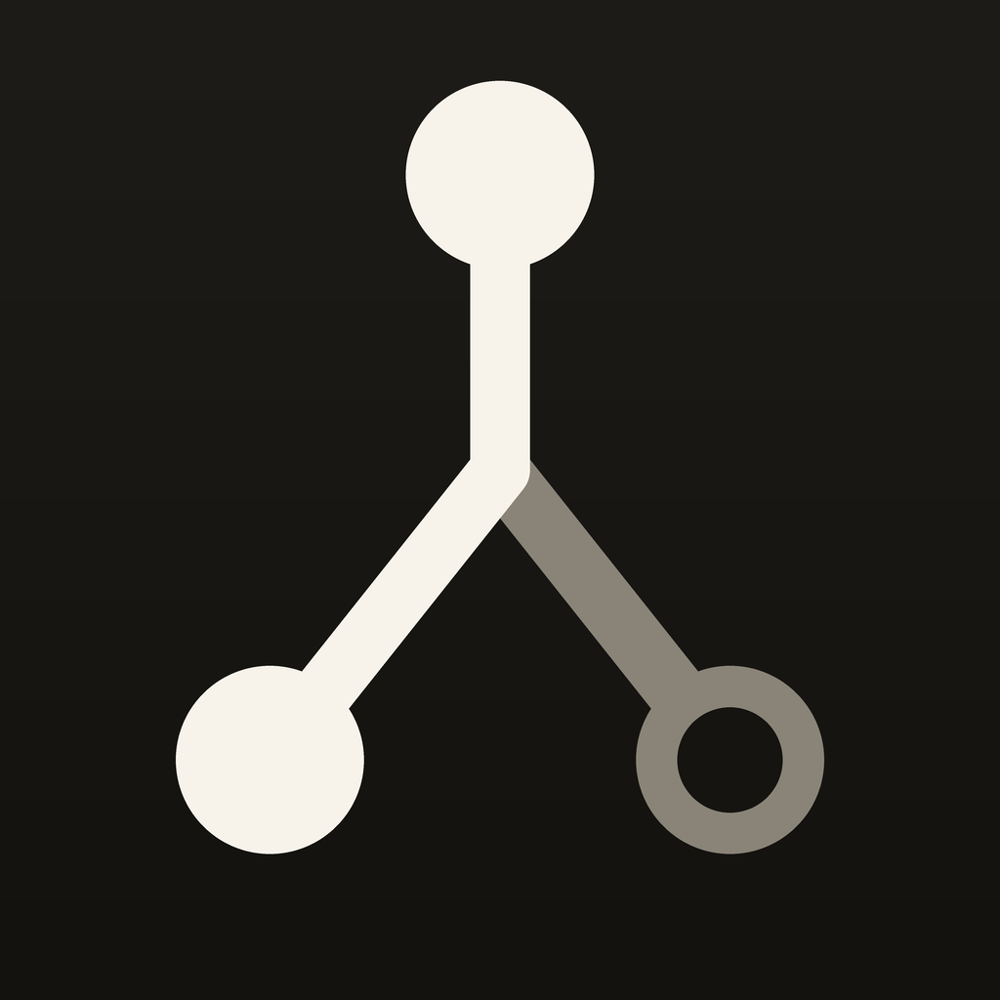

Stemmata
Your research sources, notes and citations, together.
Build a library of sources you want to return to. Find them offline, keep your own notes and take your citations into your next piece of work.
What it does
- Your saved library, searchable offline. Import a library or save the sources you choose. Search the records you have saved without an internet connection.
- Find journal articles. Search Crossref by title, author or topic when you choose. Crossref receives your query and IP address; your library and notes are not sent with the search.
- Notes beside your sources. Write a note and return to it when you reopen Stemmata.
- Take your work with you. Export citations as BibTeX or RIS, or create a Markdown copy with your notes.
- Follow citation connections. The graph uses references recorded in your library. Cited works outside your library are counted so you can see what is missing.
- Understand the access labels. Labels reflect information in source records. They do not confirm that you hold the full text or establish permission to use it.
Start with a sample
Start with your own sources or try the sample included in the app. You can also download the same sample here:
ornek-kutuphane.jsonl — 140 OpenAlex records, of which 81 can be imported. The records classify 17 as full text, 64 as metadata only and 59 as access closed. These are recorded classifications, not verified permission to use a paper.
Open it in the app with Import library, or tap Open a sample library on the first screen — the same file ships inside the app.
Where your data is
Your saved library and search index are stored locally. Notes may use Apple iCloud Drive when its app container is available. Cross-device synchronization is not guaranteed. There is no Stemmata account or analytics service. Read how your data is handled.
Stemmata reports access information from source records. It does not grant permissions or provide legal advice.